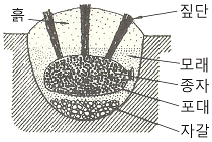
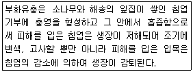

산림기능사 (2011-02-13 기출문제)
1과목: 조림 및 육림기술
1. 모수 작업 시 남겨둘 모수로 적합하지 않은 것은?
- 바람에 저항력이 강한 수목
- 결실 연령에 도달한 수목
- 형질이 우수한 수목
- 천근성인 수목
(정답률: 87%)

2. 데라사끼의 수관급 구분에서 너무 피압 되어서 충분한 공간을 주어도 쓸만한 나무로 될 가능성이 없는 것은?
- 1급목
- 2급목
- 3급목
- 4급목
(정답률: 72%)
3. 밤, 도토리 등 활엽수종의 열매를 채집한 뒤 살충 처리하는데 쓰이는 것은?
- 이황화탄소(CS2)
- 아드졸
- IBA
- 2.4 - D
(정답률: 57%)
4. 치수림(稚樹林)보육에 필요 없는 작업은?
- 덩굴식물제거
- 미래목의 선정 보육
- 우량 형질의 맹아 보육
- 목적 수종에 피해를 주는 잡목 제거
(정답률: 45%)
5. 가로 2.5m, 세로2m인 직사각형 임지에 식재를 할 때 1ha에 심을 수 있는 나무의 수는?
- 1000그루
- 2000그루
- 2500그루
- 3000그루
(정답률: 83%)
6. 정성간벌의 설명으로 틀린 것은?
- 간벌할 시기, 간벌할 나무의 수와 재적을 미리 정한다.
- 간벌목의 선정이 기술자의 주관에 따라 크게 영향을 받는다.
- 간벌을 되풀이하는데 미리 한계를 정하기가 어렵다.
- 상층간벌과 하층간벌이 있다.
(정답률: 49%)
7. 식재 시 비료를 가장 많이 주어야 하는 나무 는?
- 소나무
- 오리나무
- 삼나무
- 오동나무
(정답률: 68%)
8. 다음 그림의 종자저장 방법은?

- 실온저장법
- 밀봉저장법
- 보호저장법
- 노천매장법
(정답률: 92%)
9. 비교적 짧은 기간 동안에 몇 차례로 나누어 베어내고 마지막에 모든 나무를 벌채하여 숲을 조성하는 방식으로 갱신된 숲은 동령림으로 취급되는 작업 방식은?
- 중림작업
- 왜림작업
- 개벌작업
- 산벌작업
(정답률: 72%)
10. 임목종자의 품질검사에 대한 설명으로 틀린 것은?
- (협잡물을 제거한 순정종자의 무게/시료의 무게) × 100이 순량률이다.
- 소립종자의 실중은 종자 100알의 무게를 g으로 나타낸 값이다.
- 발아율은 순량률을 조사할 때 얻은 순정종자를 대상으로 조사한다.
- 효율은 실제 득묘할 수 있는 효과를 예측 하는데 사용될 수 있는 종자의 사용가치를 말한다.
(정답률: 83%)
11. 숲의 생성이 종자에서 발생한 치수(稚樹)가 기원이 되어 이루어진 숲은?
- 순림
- 교림
- 혼효림
- 동령림
(정답률: 40%)
12. 잣나무 종자의 성숙 시기는?
- 꽃이 핀 당년
- 꽃이 핀 이듬해 여름
- 꽃이 핀 이듬해 가을
- 꽃이 핀 3년째 가을
(정답률: 71%)
13. 가장 어린나이에서부터 가지치기를 실시해야 하는 나무는?
- 단풍나무
- 물푸레나무
- 낙엽송
- 벚나무
(정답률: 63%)
14. 종자의 발아율이 90%이고, 순량률이 80%일 때 종자의 효율은?
- 72%
- 80%
- 85%
- 90%
(정답률: 94%)
15. 주요 수종과 대목의 연결이 옳지 않은 것은?
- 소나무류 – 해송
- 장미나무 - 찔레나무
- 호두나무 – 가래나무
- 사과나무 - 산돌배나무
(정답률: 68%)
16. 중림작업에서 택벌적으로 벌채되는 상층목의 영급은?
- 하층목의 벌기의 배수가 된다.
- 하층목의 벌기의 5배가 된다.
- 하층목의 벌기의 10배가 된다.
- 하층목의 벌기의 20배가 된다.
(정답률: 62%)
17. 다음 중 동일 조건하에서 종자의 비산력(飛 散力)이 가장 큰 것은?
- 상수리나무
- 소나무
- 잣나무
- 주목
(정답률: 74%)
18. 사방조림 수종에 적합한 것은?
- 잣나무
- 낙엽송
- 아까시나무
- 물푸레나무
(정답률: 78%)
19. 파종상에서 2년, 그 후 2번 이식하여 각각 2년씩 경과한 묘목의 묘령은?
- 2 - 4
- 2 - 2 - 2
- 4 - 2
- 6 - 0
(정답률: 92%)
20. 단풍나무류와 같이 종자가 멀리까지 날아가는 수종의 모수림작업에서 모수를 1ha당 몇 그루를 남기는 것이 가장 적정한가?
- 15~30 그루
- 60~100 그루
- 150~200 그루
- 250~300 그루
(정답률: 66%)
21. 발아에 영향을 미치는 환경인자와 가장 거리가 먼 것은?
- 위도
- 광선
- 수분
- 온도
(정답률: 93%)
22. 테트라졸륨(T.T.C) 1% 수용액에 절단한 종자를 처리하였을 때 활력이 있는 종자는 어떤 색깔로 변하는가?
- 백색
- 붉은색
- 노란색
- 청색
(정답률: 86%)
23. 숲의 갱신에 따른 벌채작업의 특성으로 틀린 것은?
- 택벌작업은 회귀년을 정하여 시행한다.
- 개벌작업은 임지가 넓게 노출되어 황폐해지기 쉽다.
- 모수작업은 예비벌, 하종벌, 후벌의 단계로 갱신되는 작업방법이다.
- 왜림작업은 연료림이나 작은 나무의 생산에 적합하다.
(정답률: 74%)
24. 종자 전체의 무게가 900g 이고, 이중 협잡물의 무게가 90g이고 순수한 종자의 무게가 810g일 때의 순량률은?
- 72%
- 81%
- 90%
- 98%
(정답률: 68%)
25. 일반적으로 가지치기 작업 시에 자르지 말아야 할 가지의 최소 지름의 기준은?
- 5㎝
- 10㎝
- 15㎝
- 20㎝
(정답률: 82%)
2과목: 산림보호
26. 한상(寒傷)에 대한 설명으로 옳은 것은?
- 식물체의 조직 내에 결빙현상은 발생하지 않지만 저온으로 인해 생리적으로 장애를 받는 것이다.
- 온대식물이 피해를 가장 받기 쉽다.
- 저온으로 인해 식물체 조직 내에 결빙현상이 발생하여 식물체를 죽게 한다.
- 한겨울 밤 수액이 저온으로 인해 얼면서 부피가 증가할 때 수간이 갈라지는 현상이다.
(정답률: 82%)
27. 늦은 봄부터 늦가을까지 주로 묘목에 많이 발생하는 병해로서 잎의 뒷면에 표징이 나타나 며, 어린 눈을 침해하면 잎이 오그라들고 기형이 되는 것은?
- 소나무 그을음병
- 잣나무털녹병
- 밤나무 흰가루병
- 소나무 혹병
(정답률: 61%)
28. 길항미생물이 식물병을 방제하는 작용기작으로 틀린 것은?
- 미생물이 항생물질을 생산한다.
- 미생물이 식물을 자극시켜 지베렐린을 유도한다.
- 미생물이 병원균에 병을 일으킨다.
- 미생물이 병원균과 양분경쟁을 한다.
(정답률: 55%)
29. 다음 보기에 해당하는 해충은?

- 솔나방
- 솔잎혹파리
- 소나무좀
- 솔노랑잎벌
(정답률: 76%)
30. 유충으로 월동하는 해충끼리 짝지어진 것은?
- 참나무재주나방 - 잣나무넓적잎벌
- 미국흰불나방 - 누런솔잎벌
- 매미나방 - 어스렝이나방
- 독나방 - 버들재주나방
(정답률: 41%)
31. 응애류에 대해서만 선택적으로 방제효과가 있는 약제는?
- 살균제
- 살충제
- 살비제
- 살서제
(정답률: 91%)
32. 솔잎혹파리의 월동장소로 옳은 것은?
- 나무껍질 사이
- 땅속
- 솔잎 사이
- 나무 속
(정답률: 65%)
33. 1년에 1회 발생하며 5령충으로 월동하는 것은?
- 솔나방
- 미국흰불나방
- 매미나방
- 어스렝이나방
(정답률: 74%)
34. 유아등(誘蛾燈)을 이용한 솔나방의 구제 적기는?
- 3월 하순~4월 중순
- 5월 하순~6월 중순
- 7월 하순~8월 중순
- 9월 하순~10월 중순
(정답률: 70%)
35. 곤충이나 작은 동물의 몸에 붙거나 체내에 들어간 상태로 널리 분산되는 병은?
- 잣나무털녹병
- 향나무 녹병
- 오동나무빗자루병
- 모잘록병
(정답률: 53%)
36. 우리나라 산림해충 중에서 많은 종류를 차지하고 있으며, 대부분 외골격이 발달하여 단단하며, 씹는 입틀을 가지고 완전변태를 하는 해충은?
- 딱정벌레목
- 나비목
- 노린재목
- 벌목
(정답률: 93%)
37. 불완전균류에 대한 설명으로 옳은 것은?
- 자낭 속에서 자낭포자 8개를 갖고 있다.
- 유성세대(有性世代)로 알려져 있는 균류이다.
- 무성세대(無性世代)만으로 분류된 균류이다.
- 버섯종류를 총칭한다.
(정답률: 75%)
38. 산림해충의 방제 시 분제(粉劑)살포에 대한 설명으로 틀린 것은?
- 인가주변이나 큰 도로 가까이에 사용이 용이하다.
- 저녁때는 상승기류가 없을 때 살포한다.
- 단위시간당 액제보다 넓은 면적을 살포할 수 있다.
- 살포량은 줄기나 잎을 손으로 문질렀을 때 가루가 손에 묻을 정도이면 좋다.
(정답률: 82%)
39. 묘포 모잘록병(입고병)의 방제 대책으로 볼 수 없는 것은?
- 밀식과 이어짓기를 피한다.
- 토양과 씨앗을 소독한 후 파종한다.
- 모판이 습하지 않도록 배수를 양호하게 한다.
- 시비를 자주하고, 일회 시비량을 많이 한다.
(정답률: 83%)
40. 포플러 잎녹병 병원균의 상태를 가장 잘 나타낸 것은?
- 병원균이 포플러나 중간기주인 낙엽송과 현호색을 기주교대 하는 2종 기생균이다.
- 포플러의 잎에 녹병정자와 녹포자를 형성한다.
- 낙엽송의 잎에 여름포자와 겨울포자를 형성한다.
- 여름에 잎 뒷면에 노랑색의 소립점을 형성하고 겨울에는 잎이 담황색으로 변한다.
(정답률: 63%)
3과목: 임업기계일반
41. 산림작업을 위한 안전장비가 아닌 것은?
- 안전헬멧
- 귀마개
- 얼굴보호망
- 마스크
(정답률: 87%)
42. 삼각톱날을 연마할 때 준비하지 않아도 되는 것은?
- 마름모줄
- 원형 연마석
- 톱니 젖힘쇠
- 원형줄
(정답률: 69%)
43. 내연기관의 동력전달장치가 아닌 것은?
- 케넥팅로드(connecting rod)
- 플라이휠(fly wheel)
- 크랭크축(crankshaft)
- 밸브개폐장치
(정답률: 82%)
44. 기계톱의 안전장치로만 나열되어 있는 것은?
- 방진고무, 전방손잡이보호판, 후방손잡이, 에어휠터
- 체인잡이볼트, 스프라켓트, 에어휠터, 체인브레이크
- 기계톱날, 안내판, 지레발톱, 스파크플러그
- 체인브레이크, 전방손잡이보호판, 후방손잡이보호판, 체인잡이 볼트
(정답률: 87%)
45. 무육톱의 삼각톱날 꼭지각은 몇 도(°)로 정비하여야 하는가?
- 25°
- 28°
- 35°
- 38°
(정답률: 67%)
46. 와이어로프를 구성하는 스트랜드 조합 및 스트랜드를 구성하는 와이어로프의 조합방법 중 24 본선 6꼬임 표기로 옳은 것은?
- 24 × 6
- 6 × 24
- IWRC × S(24)
- IWRC × S(6)
(정답률: 59%)
47. 기계톱 엔진의 공회전시 체인톱날이 작동하는 원인은?
- 원심 클러치의 불량
- 기계톱날 장력 조정의 불량
- 점화코일과 단류장치의 결함
- 오일과 연료 혼합비의 부정확
(정답률: 75%)
48. 기계톱의 몸체와 체인작동부 사이에 있는 손톱의 날처럼 생긴 스파이크를 절단작업 시 나무에 박고 작업을 하면 어떤 효과가 있는가?
- 절단이 빨리 된다.
- 진동이 적고 쉽게 작업할 수 있다.
- 체인이 끊어졌을 때 잡아주는 역할을 한다.
- 체인 마모를 감소시켜 준다.
(정답률: 88%)
49. 기관 윤활유에 요구되는 특성이 아닌 것은?
- 점도가 적당할 것
- 응고점이 낮을 것
- 인화점이 낮을 것
- 열과 산의 저항력이 클 것
(정답률: 53%)
50. 예불기 사용에 따른 설명으로 맞지 않은 것은?
- 작업자의 최소안전거리는 10m 이상이다.
- 톱날의 회전방향은 시계방향이다.
- 작업은 등고선방향으로 진행한다.
- 일반적으로 공랭식 2행정 가솔린엔진을 이용한다.
(정답률: 88%)
51. 기계톱에 사용하는 오일의 점액도를 표시한 것 중 겨울용(- 25℃)으로 가장 적당한 것은?
- SAE 20W
- SAE 30
- SAE 40
- SAE 50
(정답률: 86%)
52. 벌목도구의 사용법에 대한 설명으로 틀린 것은?
- 목재돌림대는 벌목 중 나무에 걸려있는 벌도목과 땅 위에 있는 벌도목의 방향전환 및 돌리는 작업에 주로 사용된다.
- 지렛대와 밀게는 밀집된 간벌지에서 벌도방향 유인과 잘린나무 방향전환에 유용하게 사용된다.
- 쐐기는 톱의 끼임을 방지하기 위하여 사용한다.
- 스웨디쉬 갈고리는 기울어진 나무의 방향전환에 주로 사용되는 방향 갈고리이다.
(정답률: 79%)
53. 다음 중 현재 우리나라 임업에서 널리 사용 되는 기계톱안내판(guide bar)의 길이는?
- 20㎝ 이하
- 30~60㎝
- 70~100㎝
- 100㎝ 이상
(정답률: 85%)
54. 기계톱에서 쵸크 나사의 역할은?
- 연료펌프 조정
- 오일펌프 조정
- 시동 시 냉각공기량 차단
- 공전 시 연료주입량 차단
(정답률: 73%)
55. 벌도된 나무를 기계톱으로 가지치기를 할 때의 작업방법으로 옳은 것은?
- 전진하면서 작업한다.
- 안내판이 긴 중기계톱을 사용하는 것이 효율적이다.
- 작업자는 벌도된 나무로부터 가급적 먼 간격을 두고 작업한다.
- 벌목한 나무는 몸과 기계톱 사이에 놓고 작업을 하지 않는다.
(정답률: 73%)
56. 기계톱의 동력전달 순서를 바르게 나타낸 것은?
- 피스톤 → 스프라켓 → 크랭크축 → 클러치 → 체인톱날
- 피스톤 → 크랭크축 → 스프라켓 → 클러치 → 체인톱날
- 피스톤 → 스프라켓 → 클러치 → 크랭크축 → 체인톱날
- 피스톤 → 크랭크축 → 클러치 → 스프라켓 → 체인톱날
(정답률: 61%)
57. 소형윈치의 활용 범위가 아닌 것은?
- 소집재 작업
- 조재작업
- 수라설치 작업
- 직접견인
(정답률: 52%)
58. 2행정 내연기관에서 연료에 오일을 첨가시키는 가장 큰 이유는?
- 점화를 쉽게 하기 위하여
- 엔진 내부에 윤활작용을 시키기 위하여
- 엔진 회전을 저속으로 하기 위하여
- 체인의 마모를 줄이기 위하여
(정답률: 90%)
59. 휘발유 1.8ℓ에 혼합하는 엔진오일의 적절한 양(ℓ)은? (단, 휘발유와 엔진오일의 혼합비는 25 : 1로 한다.)
- 0.072ℓ
- 0.72ℓ
- 1.8ℓ
- 3.6ℓ
(정답률: 64%)
60. 기계톱에서 톱니의 부분별 기능에 대한 설명 중 틀린 것은?
- 톱니 가슴각 부분에서 나무를 절단한다.
- 꼭지각이 적을수록 톱니가 약하다.
- 톱니 홈은 톱밥이 임시 머문 후 빠져나가는 곳이다.
- 꼭지선이 일정하지 않으면 톱질할 때 힘이 적게 든다.
(정답률: 77%)